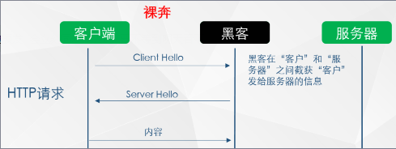
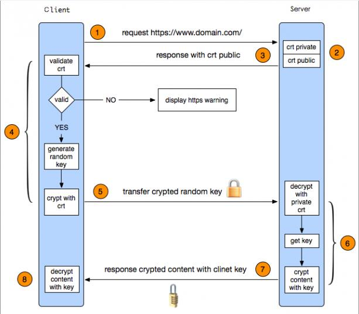
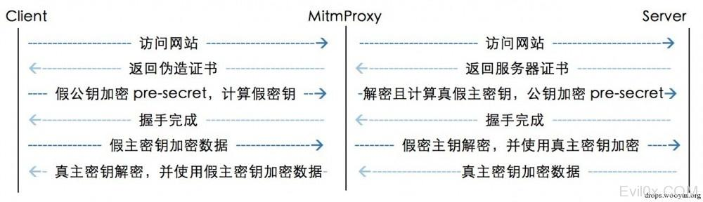
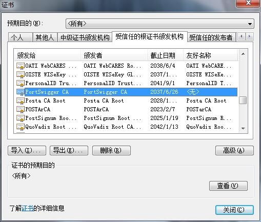
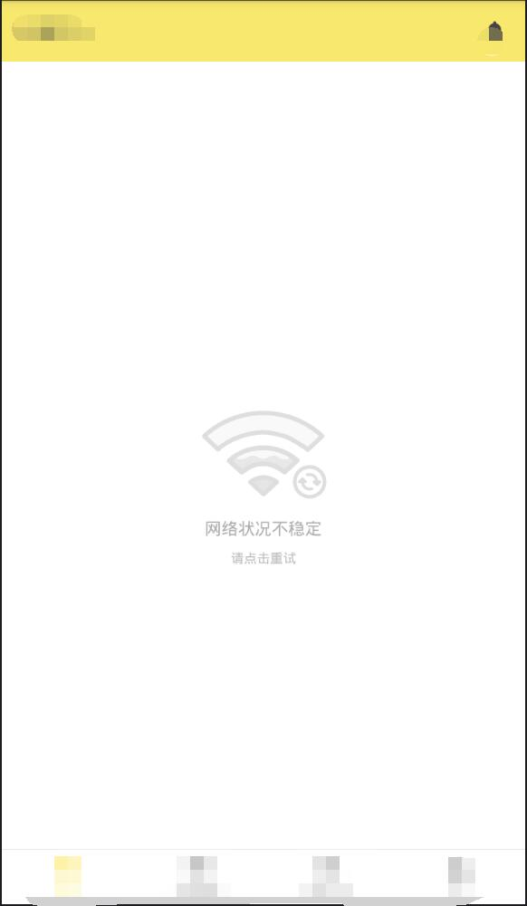
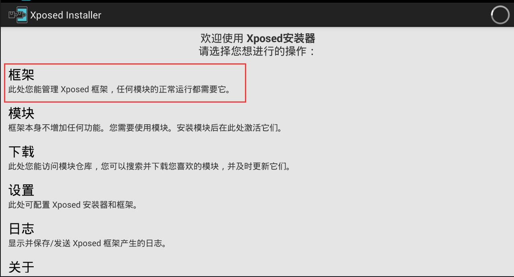
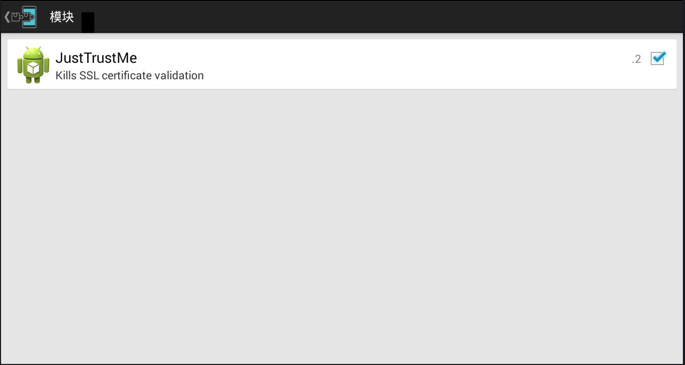

0x00
本文主要是介绍如何使用Burp去抓取各种情况下的APP流量。顺带简单介绍了下HTTPS和SSL pinning。
0x01 HTTP
HTTP 协议（HyperText Transfer Protocol，超文本传输协议）：是客户端浏览器或其他程序与Web服务器之间的应用层通信协议 。
客户端和服务器之间是明文传输，在网络传输中无任何安全保障。
但是应用可以自己制定加密规则，对传输的内容进行加密。
由于HTTP协议未对通信双方进行任何的验证，所以黑客可以轻松在链路中充当中间者，任意修改往来的传输内容。
BURP抓取普通的http的协议内容就是把BURP设为代理，这样所有的流量就会从BURP流经，BURP此时就是一个中间人，由于传输所有的信息都是明文的，所以可以修改任意往来数据包。

0x02 HTTPS
HTTPS 协议（HyperText Transfer Protocol over Secure Socket Layer）：可以理解为HTTP+SSL/TLS， 即HTTP下加入SSL层。SSL工作在会话层（负责会话的建立与维持），经过加密后仅IP，端口和域名是明文的。
TLS（Transport Layer Security，传输层安全）是由SSL（Secure Socket Layer，安全套接字层）演化而来，目前使用最广泛的是TLS 1.1、TLS 1.2。TLS 1.3还在草案阶段。

HTTPS先是请求服务器的证书，然后根据服务器返回的证书进行验证。
证书来源可信且证书签名验证通过后就会使用证书提供的公钥使用RSA非对称算法去加密随机生成的AES对称加密算法的密钥。
服务器使用私钥解密获取对称加密的密钥。
之后所有的数据包往来都是建立在这个对称加密之上，和非对称加密无关。
不全程使用非对称加密主要原因，一是和加密效率有关，另一点，这样保证了每次交流中的秘钥都不同，不存在由于固定密钥遭到破解的问题。
这样就安全了吗？
显然不是，因为对于客户端来说证书是从外部提供的，所有的验证参数都是由该证书提供的，所以，就可以在链接建立前由中间者提供证书，从而造成中间人攻击。

BURP抓取HTTPS的数据包就是先把自己的证书添加到系统的信任根证书颁发机构中，

然后客户端把代理的BURP当作服务器，使用BURP提供的证书对数据包进行加密，
BURP利用自己的私钥把数据包解密还原后，再利用真正的服务器的证书对数据包进行加密。
0x03 SSL pinning
上面可以看到普通的HTTPS是会信任系统中的根证书颁发机构的，而这个机构用户可以手动添加，导致可抓到HTTPS的数据包。
于是有些软件就会使用SSL pinning。
SSL pinning技术常用于APP中，主要就是将目标服务器的SSL证书放到app里面。在进行网络通信前，先判断服务器返回的证书是否和本地APP中存有的一致，如果不一致就会中断连接。
所以当使用BURP去抓取某些APP的数据包时，APP里会显示无网络连接之类的网络连接错误提示。

有两种破解的思路：
- 逆向APP，把伪造的证书替换到APP中或干脆删掉SSL pinning验证代码，然后重新打包签名。
- 在系统中HOOK用于进行SLL pinning的代码，使所有的证书验证都返回
true。
说实话，我两种都不会。。。
但是有大佬会啊，而且工具都写好了
在系统已经root的情况下，使用Xposed + JustTrustMe就可轻松实现第2种方法。
看清楚Android版本下载对应的Xposed Installer，然后点击框架，进去后选择安装Xposed。

再在手机中安装JustTrustMe，点击上图中的模块，进去就可选择启用JustTrustMe模块了，重启后生效。

简单的安装后，在手机已经安装BURP证书的情况下，就可以轻松抓取APP中的HTTPS数据包了。
0x04 双向验证
既然上面都是单向验证不安全，那么采用双向验证呢？
其实仔细想想也不是无法解决的问题。
上面的方法已经解决了客户端对服务器端的验证，现在只要解决服务器对客户端的验证就好了。
也不复杂，只要提取出软件中的客户端证书，然后让代理工具用这个证书来和服务器端进行通信就好了。
这种情况目前还没碰到，但找到一篇参考文章：如何突破双向证书认证防护。
先在APP的资源中找到使用的证书，如果需要证书口令，就要去逆向回来的代码中找口令，如果APP混淆过了就更麻烦了，所以作者提供了一个思路，去找历史版本中没有混淆加固的版本，这样阅读起来就会方便很多。
然后让抓包工具加载这个提取出的证书就可以实现抓包了。
针对Android APP的逆向，个人比较推荐jadx，在我目前的实践中，使用起来还是比较方便实用的。
0x05 自有协议
某些手机APP使用了自有协议如微信等，具体表现就是使用工具抓包时，抓不到APP的数据包，而且APP仍能自由通信，不会有任何影响。
曾照这篇文章经验分享 | Burpsuite抓取非HTTP流量实验过，但没有成功，后续碰到再补充。
还有个方法是使用iptables来转发流量。
References
HTTPS系列干货（一）：HTTPS 原理详解
对抗Android SSL Pinning
有关ssl-pinning的总结
NoPE Proxy